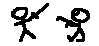

|  |
This is an example of a typical game of Pictorial Consequences.
Three or more friends decide to have a game and arrange it online (e.g. using IRC or an instant messenger such as ICQ). One of them, preferably the one with the fastest connection, decides to be the host.
Once the host gets to a window labelled "Host Setup" they can read their IP address off the top and send it to their friends. In the "Host Setup" window they can also choose the length (in rounds) of the game. Then they must wait until their friends join.
Once the host's friends have all joined, the host starts by pressing the "Begin Game" button. This takes them to the main game screen.
To begin the game, each player draws a picture of their own design. Anything they like! The left mouse button is used to draw lines or drag a rectangle which will be erased, depending on what is selected in area under the canvas. The right mouse button is only used to drag rectangles for erasure.
Once the player is happy with their picture, they click the "Send" button and await their instructions.
The next player will receive their image and be asked to describe it. A player describes the image by typing in the text field directly below the image. Pressing "Enter" at the end of a description will not send the description. Players must actually click the "Send" button to send their description on to the next player.
Players should be careful not to confuse the describing text field with the chat text field at the very bottom of the window.
The next player in the circle is then asked to draw a picture of the last player's description. They receive these instructions written in a box at the top left of the window.
The cycle of alternate drawing and describing repeats for the number of rounds the host has specified.
Often players have to wait to be given something to draw or describe. It can be due to slow connections but more often than not is due to another player taking a long time to finish off their master piece (which happens in the real life game too). During this time players may wish to chat to eachother using the text field at the very bottom of the window.
By beginning a chat message with the switch /me, players can 'perform actions' in the chat.
The /me switch creates a chat message of the format; Asterisk, player's name and then the rest of the text following the /me switch.
When the last image or description for that paper is sent, the paper automatically pops up in the top left corner of all players screens.
This is hopefully the point at which everyone laughs and writes some more chat messages about how silly all the players are.
The paper contains the series of images scaled to one third their original size and separated from eachother by the appropriate descriptions.
If players wish to they can save their papers by pressing the "Save" button located at the bottom right of each paper window. The papers are saved in the CompuServe Graphics Interchange Format (.gif).
When a player is finished looking at a paper, they can press the "Okay" button. This will close the paper window forever. So players should be careful to save their picture before doing this if they wish to keep them.
This is the end of the game. If the players wish to have another game, they must restart the application in the same manner they did to begin it.